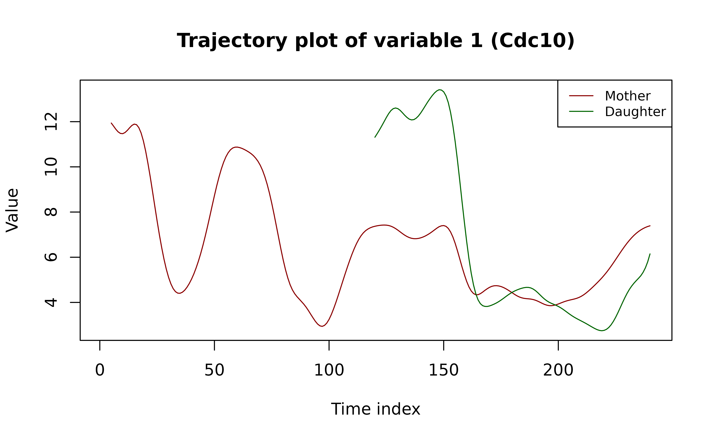

Purpose
This tutorial presents a toy example of ODEinherit, using the dataset from our paper to estimate inheritance between mother and daughter cells.
A successful installation of ODEinherit is required. See
the last section of this article for a list of all system and package
dependencies used to create this tutorial.
For a single mother–daughter cell pair, the entire workflow typically finishes in under 20 minutes when run on 8 cores of an Apple M1 chip.
Overview
Here we present the workflow for a single mother–daughter cell pair,
the same pair used to create Figure 2 in the paper. See
?cell_lineage_data for more details about the dataset.
Step 0: Load the package and select a mother–daughter cell pair
cell_lineage_data <- ODEinherit::cell_lineage_data
names(cell_lineage_data)
#> [1] "metadata" "time_series"
time_series <- cell_lineage_data$time_series
metadata <- cell_lineage_data$metadata
var_names <- names(time_series)Following convention, we refer to the time series as
“trajectories.”
The code below extracts and plots the trajectories for the selected
cells.
(Note: In the paper, each trajectory is centered to mean 0; here, we
omit centering for clearer illustration.)
# extract trajectories by specifying cell id
idx_M <- which(metadata$cell_id == "3-20-1")
idx_D <- which(metadata$cell_id == "3-20-17")
# birth time point indices (row indices of matrices in `time_series`)
btp_idx_M <- metadata$cell_birth_timepoint[idx_M]
btp_idx_D <- metadata$cell_birth_timepoint[idx_D]
# reshape data to the dimension: (# total time points, # variables)
Y_M_full <- sapply(time_series, function(mat){mat[idx_M,]})
Y_D_full <- sapply(time_series, function(mat){mat[idx_D,]})
dim(Y_M_full)
#> [1] 240 6
# plot the trajectories of the first variable
var_idx <- 1
yj_M <- Y_M_full[,var_idx]
yj_D <- Y_D_full[,var_idx]
par(mfrow = c(1,1))
time_grid <- 1:ncol(time_series[[1]])
plot(NA, type = "n",
main = paste0("Trajectory plot of variable ", var_idx, " (", var_names[var_idx], ")"),
xlab = "Time index", ylab = "Value",
xlim = range(time_grid, na.rm = T),
ylim = range(c(yj_M, yj_D), na.rm = T))
lines(time_grid, yj_M,
lty = 1, col = "darkred")
lines(time_grid, yj_D,
lty = 1, col = "darkgreen")
legend("topright",
legend = c("Mother", "Daughter"),
lty = 1,
col = c("darkred", "darkgreen"),
cex = 0.8)
Step 1: Network estimation with KernelODE
We begin with two numeric matrices, Y_M and
Y_D, representing the mother and daughter cells.
Rows correspond to time points, and columns correspond to protein
variables.
The ODE regulatory network for each cell is estimated
separately using KernelODE.
Before applying KernelODE, we:
- Remove the portion of each trajectory before cell birth.
- Standardize the observation time points to the interval
[0, 1]for each cell. - Remove the linear trend in the time series to adjust for time effects.
In Step 1 of KernelODE, we fit cubic smoothing
splines to obtain smoothed trajectory estimates.
In Step 2, we estimate ODE regulatory networks within
an RKHS modeling framework.
For this example, we use a first-order Mat'ern kernel.
See the original KernelODE paper for more details on the algorithm.
# remove the pre-birth portion
Y_M <- Y_M_full[btp_idx_M:nrow(Y_M_full),]
Y_D <- Y_D_full[btp_idx_D:nrow(Y_D_full),]
# Note: Y_M and Y_D now start at each cell’s birth (corresponding to their first row).
# standardize observation time to [0, 1] for each cell
n_M <- nrow(Y_M)
obs_time_M <- 1/n_M * (1:n_M)
n_D <- nrow(Y_D)
obs_time_D <- 1/n_D * (1:n_D)
# remove linear trend for each variable
linear_trend_M <- matrix(NA, nrow = nrow(Y_M), ncol = ncol(Y_M))
linear_trend_D <- matrix(NA, nrow = nrow(Y_D), ncol = ncol(Y_D))
for (j in 1:ncol(Y_M)){
yj <- Y_M[,j]
lt_fitted <- lm(yj ~ obs_time_M)$fitted.values # fitted linear trend
yj <- yj - lt_fitted # remove linear trend
Y_M[,j] <- yj
linear_trend_M[,j] <- lt_fitted
}
for (j in 1:ncol(Y_D)){
yj <- Y_D[,j]
lt_fitted <- lm(yj ~ obs_time_D)$fitted.values # fitted linear trend
yj <- yj - lt_fitted # remove linear trend
Y_D[,j] <- yj
linear_trend_D[,j] <- lt_fitted
}Here we easily define a pipeline for network estimation:
kernelODE_pipeline <- function(Y,
obs_time,
kernel,
kernel_params,
prune_thres = 0.05, # network pruning threshold
depth = NULL # maximum number of regulator edges to prune for each variable
){
tt <- 0.001*(1:1000) # time grid for numerical integration, does not include 0
# KernelODE step 1: smooth the observed trajectories
res_step1 <- ODEinherit::kernelODE_step1(Y = Y,
obs_time = obs_time,
tt = tt)
yy_smth <- res_step1$yy_smth
# KernelODE step 2: estimate the derivative functions Fj's
res_step2 <- ODEinherit::kernelODE_step2(Y = Y,
obs_time = obs_time,
yy_smth = yy_smth,
tt = tt,
kernel = kernel,
kernel_params = kernel_params,
interaction_term = FALSE, # without interaction
verbose = 0)
network_est_original <- res_step2$network_est
# prune the network
res_prune <- ODEinherit::prune_network(network_original = network_est_original, # network to prune
prune_thres = prune_thres,
depth = depth,
Y_list = list(Y), # here we prune it cellwise
yy_smth_list = list(yy_smth),
obs_time_list = list(obs_time),
tt = tt,
kernel = kernel,
kernel_params_list = list(kernel_params),
interaction_term = FALSE,
parallel = TRUE,
verbose = 0)
network_est_pruned <- res_prune$network_pruned
return (list(network_est_pruned = network_est_pruned,
yy_smth = yy_smth,
tt = tt))
}We now apply the pipeline separately to the mother and daughter cells
to obtain their respective regulatory networks. The pruning step is the
most time-consuming part in the pipeline. As a faster alternative, you
can specify nzero argument in
ODEinherit::kernelODE_step2() to directly control the
number of regulators selected by the Lasso.
# kernel configuration
kernel <- "matern"
kernel_params <- list(list(lengthscale=1)) # recycled for all variables, used for both mother and daughter cells
# run the pipeline separately for mother and daughter
res_KernelODE_M <- kernelODE_pipeline(Y = Y_M,
obs_time = obs_time_M,
kernel = kernel,
kernel_params = kernel_params)
#> Note: R2 increases when removing these edges: 1->1
res_KernelODE_D <- kernelODE_pipeline(Y = Y_D,
obs_time = obs_time_D,
kernel = kernel,
kernel_params = kernel_params)
#> Note: R2 increases when removing these edges: 4->2, 6->2, 1->4, 2->4, 3->4, 2->5, 3->5, 5->5, 2->6, 3->6, 5->6
#> Note: R2 increases when removing these edges: 2->2
# extract results
network_est_M <- res_KernelODE_M$network_est_pruned
network_est_D <- res_KernelODE_D$network_est_pruned
yy_smth_M <- res_KernelODE_M$yy_smth
yy_smth_D <- res_KernelODE_D$yy_smth
tt_M <- res_KernelODE_M$tt
tt_D <- res_KernelODE_D$ttStep 2: Evaluate networks via daughter trajectory recovery
We refit KernelODE to recover the daughter trajectories using the mother-derived and daughter-derived networks, respectively, to evaluate how well each explains variation in the daughter trajectories. Goodness-of-fit is quantified using a heuristic metric.
KODE_refit_MtoD <- ODEinherit::refit_kernel_ODE(Y = Y_D, # target: daughter's observed trajectories
obs_time = obs_time_D,
yy_smth = yy_smth_D,
tt = tt_D,
kernel = kernel, # same config as used for network estimation
kernel_params = kernel_params, # same config as used for network estimation
interaction_term = FALSE,
adj_matrix = network_est_M) # use mother network
KODE_refit_DtoD <- ODEinherit::refit_kernel_ODE(Y = Y_D, # target: daughter's observed trajectories
obs_time = obs_time_D,
yy_smth = yy_smth_D,
tt = tt_D,
kernel = kernel,
kernel_params = kernel_params,
interaction_term = FALSE,
adj_matrix = network_est_D) # use daughter networkWe now plot the reconstructed daughter trajectories using each network.
Caveat: The refitted trajectories returned by
refit_kernel_ODE() exclude the portion prior to cell birth,
as this portion was removed before being passed to the pipeline.
par(mfrow = c(1,2))
# extract refitted daughter trajectories (both are /daughter/ trajectories!)
Y_refit_MtoD <- KODE_refit_MtoD$Y_refit
Y_refit_DtoD <- KODE_refit_DtoD$Y_refit
# add the linear trend back
Y_refit_MtoD <- Y_refit_MtoD + linear_trend_D
Y_refit_DtoD <- Y_refit_DtoD + linear_trend_D
# pad NA for the pre-birth portion
Y_refit_MtoD <- rbind(matrix(NA, nrow = btp_idx_D-1, ncol = ncol(Y_refit_MtoD)), Y_refit_MtoD)
Y_refit_DtoD <- rbind(matrix(NA, nrow = btp_idx_D-1, ncol = ncol(Y_refit_DtoD)), Y_refit_DtoD)
# select a variable to plot
var_idx <- 1
yj_MtoD <- Y_refit_MtoD[,var_idx]
yj_DtoD <- Y_refit_DtoD[,var_idx]
yj_D <- Y_D_full[,var_idx]
# plot Mother -> Daughter recovery
plot(NA, type = "n",
main = paste0("Daughter traj. reconstructed by mother network\nVar ", var_idx, " (", var_names[var_idx], ")"),
cex.main = 0.8,
xlab = "Time index", ylab = "Value",
xlim = range(time_grid, na.rm = T),
ylim = range(c(yj_MtoD, yj_D), na.rm = T)
)
lines(time_grid, yj_D,
lty = 1, col = "darkgreen") # observed daughter traj
lines(time_grid, yj_MtoD,
lty = 2, col = "darkred") # daughter traj recovered by mother
legend("topright",
legend = c("obs. D.", "M to D"),
lty = c(1, 2),
col = c("darkgreen", "darkred"),
cex = 0.8)
# plot Daughter -> Daughter recovery
plot(NA, type = "n",
main = paste0("Daughter traj. reconstructed by its own network\nVar ", var_idx, " (", var_names[var_idx], ")"),
cex.main = 0.8,
xlab = "Time index", ylab = "Value",
xlim = range(time_grid, na.rm = T),
ylim = range(c(yj_DtoD, yj_D), na.rm = T)
)
lines(time_grid, yj_D,
lty = 1, col = "darkgreen") # observed daughter traj
lines(time_grid, yj_DtoD,
lty = 2, col = "darkgreen") # daughter traj recovered by itself
legend("topright",
legend = c("obs. D.", "D to D"),
lty = c(1, 2),
col = c("darkgreen", "darkgreen"),
cex = 0.8)Step 3: Calculate the inheritance score from the trajectory recovery metrics
We extract the metrics ( and ) and calculate the inheritance score as with the value capped at 1.
R2_MtoD <- KODE_refit_MtoD$metrics$R2
R2_DtoD <- KODE_refit_DtoD$metrics$R2
pi_score <- min(R2_MtoD / R2_DtoD, 1)
pi_score
#> [1] 0.6315346Setup
The following shows the suggested package versions that the developer (GitHub username: WenbinWu2001) used when developing the ODEinherit package.
> devtools::session_info()
─ Session info ───────────────────────────────────────────────────────
setting value
version R version 4.4.2 (2024-10-31)
os macOS Sequoia 15.3.2
system aarch64, darwin20
ui RStudio
language (EN)
collate en_US.UTF-8
ctype en_US.UTF-8
tz America/New_York
date 2025-08-13
rstudio 2024.12.1+563 Kousa Dogwood (desktop)
pandoc 3.2 @ /Applications/RStudio.app/Contents/Resources/app/quarto/bin/tools/aarch64/ (via rmarkdown)
quarto 1.5.57 @ /Applications/RStudio.app/Contents/Resources/app/quarto/bin/quarto
─ Packages ───────────────────────────────────────────────────────────
package * version date (UTC) lib source
cachem 1.1.0 2024-05-16 [1] CRAN (R 4.4.1)
callr 3.7.6 2024-03-25 [1] CRAN (R 4.4.0)
cli 3.6.4 2025-02-13 [1] CRAN (R 4.4.1)
codetools 0.2-20 2024-03-31 [1] CRAN (R 4.4.2)
desc 1.4.3 2023-12-10 [1] CRAN (R 4.4.1)
devtools 2.4.5 2022-10-11 [1] CRAN (R 4.4.0)
digest 0.6.37 2024-08-19 [1] CRAN (R 4.4.1)
ellipsis 0.3.2 2021-04-29 [1] CRAN (R 4.4.0)
evaluate 1.0.3 2025-01-10 [1] CRAN (R 4.4.1)
fastmap 1.2.0 2024-05-15 [1] CRAN (R 4.4.1)
foreach 1.5.2 2022-02-02 [1] CRAN (R 4.4.0)
fs 1.6.5 2024-10-30 [1] CRAN (R 4.4.1)
glmnet 4.1-8 2023-08-22 [1] CRAN (R 4.4.0)
glue 1.8.0 2024-09-30 [1] CRAN (R 4.4.1)
htmltools 0.5.8.1 2024-04-04 [1] CRAN (R 4.4.0)
htmlwidgets 1.6.4 2023-12-06 [1] CRAN (R 4.4.0)
httpuv 1.6.15 2024-03-26 [1] CRAN (R 4.4.0)
iterators 1.0.14 2022-02-05 [1] CRAN (R 4.4.0)
knitr 1.49 2024-11-08 [1] CRAN (R 4.4.1)
later 1.4.1 2024-11-27 [1] CRAN (R 4.4.1)
lattice 0.22-6 2024-03-20 [1] CRAN (R 4.4.2)
lifecycle 1.0.4 2023-11-07 [1] CRAN (R 4.4.0)
magrittr 2.0.3 2022-03-30 [1] CRAN (R 4.4.0)
Matrix 1.7-2 2025-01-23 [1] CRAN (R 4.4.1)
memoise 2.0.1 2021-11-26 [1] CRAN (R 4.4.0)
mime 0.12 2021-09-28 [1] CRAN (R 4.4.0)
miniUI 0.1.1.1 2018-05-18 [1] CRAN (R 4.4.0)
ODEinherit * 1.0.0 2025-08-13 [1] local
pillar 1.10.1 2025-01-07 [1] CRAN (R 4.4.1)
pkgbuild 1.4.6 2025-01-16 [1] CRAN (R 4.4.1)
pkgconfig 2.0.3 2019-09-22 [1] CRAN (R 4.4.0)
pkgload 1.4.0 2024-06-28 [1] CRAN (R 4.4.0)
processx 3.8.5 2025-01-08 [1] CRAN (R 4.4.1)
profvis 0.4.0 2024-09-20 [1] CRAN (R 4.4.1)
promises 1.3.2 2024-11-28 [1] CRAN (R 4.4.1)
ps 1.8.1 2024-10-28 [1] CRAN (R 4.4.1)
purrr 1.0.4 2025-02-05 [1] CRAN (R 4.4.1)
R6 2.6.1 2025-02-15 [1] CRAN (R 4.4.1)
Rcpp 1.0.14 2025-01-12 [1] CRAN (R 4.4.1)
remotes 2.5.0 2024-03-17 [1] CRAN (R 4.4.1)
rlang 1.1.5 2025-01-17 [1] CRAN (R 4.4.1)
rmarkdown 2.29 2024-11-04 [1] CRAN (R 4.4.1)
rprojroot 2.0.4 2023-11-05 [1] CRAN (R 4.4.1)
rstudioapi 0.17.1 2024-10-22 [1] CRAN (R 4.4.1)
sessioninfo 1.2.3 2025-02-05 [1] CRAN (R 4.4.1)
shape 1.4.6.1 2024-02-23 [1] CRAN (R 4.4.1)
shiny 1.10.0 2024-12-14 [1] CRAN (R 4.4.1)
survival 3.8-3 2024-12-17 [1] CRAN (R 4.4.1)
tibble 3.2.1 2023-03-20 [1] CRAN (R 4.4.0)
urlchecker 1.0.1 2021-11-30 [1] CRAN (R 4.4.0)
usethis 3.1.0 2024-11-26 [1] CRAN (R 4.4.1)
vctrs 0.6.5 2023-12-01 [1] CRAN (R 4.4.0)
xfun 0.50 2025-01-07 [1] CRAN (R 4.4.1)
xtable 1.8-4 2019-04-21 [1] CRAN (R 4.4.0)
yaml 2.3.10 2024-07-26 [1] CRAN (R 4.4.1)